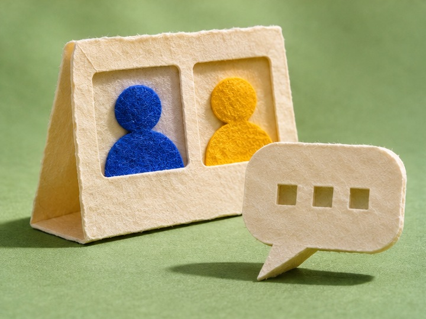

Brand assets
The Shared identity
Two speech bubbles meet in the wordmark. Three square openings in orange and a green overlap give the conversation its shape.

The original 09 mark
Build from square units. Leave two units of clear space around the artwork. Use the ink wordmark on warm white and keep the three dots centred in the orange bubble.

Studio colours
Warm white
Ink
Orange
Blue
Green

Paper, felt and type
The tabletop scenes are AI-generated illustrations of how Shared works. Instrument Serif sets the headlines, Inter carries the explanations, and JetBrains Mono labels each study.
Download the asset kit